Welcome to my second post! In this post I will be presenting to you a walktrough of a hacking challenge while also sharing a few things I learned while trying to complete it! So, first things first, I should start this post by providing a link to the platform that enabled me to perform this challenge, which is the Try Hack Me platform. Here is their website. Try Hack Me is a website that allows a registered user to access various labs, which they call 'rooms', some of them which contain vulnerable machines you can use to practice your hacking skills, others which contain challenges such as password cracking challenges where you are able to learn more about tools that can be used for hacking (ethical hacking, hopefully. But I will not lie to you and say that real black hat hackers don't use those as well. The tools exist. The developers usually encourage you to use them for good, but unfortunately, that is not something that we can control 24/7). With that introduction made, I am a member of the platform, and after a long time being inactive, I decided to try the Basic Pentesting room challenge, which has eventually led me to this blog post.
So, I want to start describing my journey through this challenge by saying that I am not a pentesting noob. I have worked in security and I have taken on various challenges like the one we are talking about right now, before. Putting it simply: I consider myself a connoisseur on the basics of hacking/pentesting. However, I am, by no means, an expert, and when we are talking about computers and IT in general, is anyone really? Technology is advancing in such a fast pace that we have a huge amount of new software and hardware showing up everyday, and that's why we always need to keep updating our skills to try to maintain our expert or not so expert level on a subject. I mean, that goes for anything in life, but it's a little bit harder to compare IT, to, let's say, physics, where it's more about finding out about things that already exist, than it is about learning about new things constantly being added to the shelf. Learning and discovering new things will always be continuous, but, in our IT professional case it will also always be limitless, considering the limit to the human mind when it comes to creating useless and unsafe new software does not exist. But I digress. Let's get to the meat and potatoes (or whatever your favorite dish is) of this post, shall we?
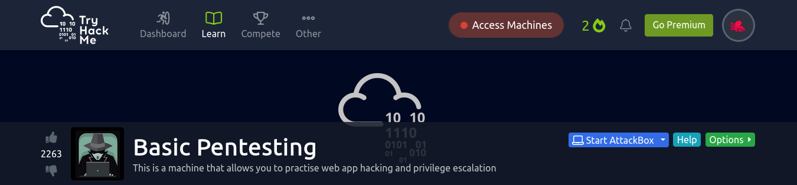So, as the image above shows, Try Hack Me describes the Basic Pentesting room as a machine that allows you to practice web app hacking and privilege escalation. Erm...I am going to disagree a little bit with that, and tell you that, for me, this challenge was more of a password cracking challenge than anything else. And, hey, I am not saying that it is a problem, because password cracking, to me, is something basic when you are considering pentesting. This challenge is also about enumeration and showing you how hacking sometimes is not all about custom exploitation codes and assembly code analysis: it's about the simple mistakes people make when configuring their networks or using their softwares, and how you can, by looking at some basic (cue the room name) things, easily gain that so very coveted root access.
I want to try to keep this post succint, but who am I kidding? I write too much for my own good. So, in preparation to the many lines of explaining that will follow, I will try to make it less awful and a bit more organized by dividing our step-by-step into sections. Having said that, without further ado, I give you...
If the machine you are trying to hack does not have a public IP address, you need to connect to its network to be able to communicate with it, right? So that's what I did, using the VPN configuration provided to me by Try Hack Me. This is not a 'real' step for this challenge, but I thought I might as well include it in the post, because it is relevant, is it not? Before doing all of the cool stuff with the 6 different monitors flashing before you in all possible neon colors, while endless lines of code scroll down through many of the various opened software windows you have, you need to actually be able to access (speak to) your target. Not connecting to the network of your target, in this case, via a VPN, is the same as saying you want to talk to someone but you are not in the same physical location as them, and you do not try to call them or send them a letter. You just speak to the void. And while intent is powerful, let me tell you, that someome is probably not going to get your message like this. So, what we are actually trying to do here with the VPN is establish a communication to the entity we wish to talk to, in this case, a fellow computer. Once again, for those that do not understand how a VPN works (unfortunately, I advise you maybe update your knowledge on a few subjects before continuing to read this post if that is the case, because it may be a little bit complex to understand without the basics), a VPN is a tunnel that is established between a device and a target network. This tunnel will make it seem like the device is part of the network that is the VPN, eventhough the messages sent by the device are parading through the whole internet before they reach said network. However, worry not, because eventhough messages go through the very public internet to reach the destination network, the tunnel established between the device and the VPN provider, a.k.a (in very simple terms) cryptography, guarantees that the message will only have its contents viewed by those belonging to the network, meaning that, when the device's message arrives at the entry point of the VPN, it will leave the tunnel, being decrypted, and presenting its original form to those allowed to read it. More than that, the VPN makes transparent the fact that this device connecting is probably not physically present in the network. It gives this device a valid IP address (yes, an IP address is analogous to a real address. It sets your device's address in the Internet, so it can be found by other devices for communication) for that network, and learns what the actual device's address in the internet is so that messages that arrive from it can be adjusted to present the IP address known to other devices inside of the VPN. Analogy: I am living in the times of a global pandemic. I am from country X, but unfortunately I am stuck in country Y due to the whole health situation the world is facing. I want, however, to interact with my friends back in X as if I were there. The Internet does not exist in this ficticious world, nor do telephones. Only letters exist. Also, by 'interact', I mean that I want to exclusively send letters, because in our (not at all) ficticious world, sending letters is the hip thing to do when you can't directly party with people. So, I send a letter to country X, stating that I am a citizen and I want to partake on activities regarding my country, eventhough I am not present. The international post office of the country, which deals with letters coming from the outside, verifies the data I sent and confirms that I am indeed a citizen and allowed to do what I ask of them. They then tell me that a specific address in X (which could be my home address for my home in country X) will be used for people inside the country, including my friends, to communicate with me, as if I were actually living at that address. It will be seamless, no one will never know I am not in country X. So, whenever I send a letter from Y to X, the post office changes my Y address to my X address and forwards my letter as they would had it always come from inside country X. Why not send letters directly from Y to X, and vice-versa, you ask? Because in this very real but unreal scenario, people that send letters from outside country X to country X do not have the same privileges. They may be blocked depending on their origin; the contents of the message may need to be very specific, with topics such as baked goods being banned for outsiders; and some addresses from inside country X may be simply inacessible to outsiders, with a list of allowed and public addresses being the only ones they can send letters to. I, as a citizen of country X, want to be able to communicate freely even though I am not physically present at my country, being given access to all possible internal addresses, and being able to send letters to all services country X may provide to its citizens via mail. Since some of the contents of my letters may be confidential, not allowed to be viewed by outsiders, the post office sends me a box, which is locked by a key, also sent to me. I use this box and this key to send a letter to the post office with a new key, that will be used to encrypt all other messages I send to them in the future, so that such messages, which will be the regular messages I send to my friends or to services inside of country X, cannot be read by unauthorized outsiders. This letter is put it in the box, the box is locked. This key I possess cannot be used to unlock the box. Only the post office at country X possesses the unlock key. This heavily protected key will unlock the box once it arrives, and the post office and myself will have defined a secret that will be further used to encrypt all of the messages I send from that point forward to country X, and that is what forms the 'tunnel' that prevents others that need to touch my letter to get it to country X from contry Y from ever knowing its contents. So there you have it. A very weird way of explaining how a VPN works (with a little bit of an explanation for assymetric cryptography as well). Sometimes the story will go a little bit different: sometimes, it's not the post office that is responsible for changing your address, its an intermediate entity. The VPN tunnel you establish with this intermediate entity is simply used to mask your true origin, in case country X, which does not allow anyone who is not physically inside the country to send letters to internal addresses, but still has some public addresses which letters can be sent to from outsiders, is rejecting letters destined to such public addresses when they are letters that have as an origin country Y. There is also the possible case where it accepts letters from anywhere, but you don't want them to know you hail from Y. The intermediate, which will be a neutral country Z you want to temporarily be a citizen of, will give you a new address among the ones that belongs to it, and will send the letter on your behalf, still using the box and cryptography to protect the true contents of your message until your messages reach it, so that possible snoopers can't know what you truly are doing other than sending letters to the intermediate. You may be sending a bomb, or you may be sendind pictures of kittens, but no one in between you and your intermediate will know. If a bomb is sent to final destination country X from you through the intermediate, then the intermediate takes the fault, unless it decides to rat you out (since it knows you are the one that originally sent it, even though others may not because of the VPN tunnel). But in our case, none of that matters, because we are considering a situation where the post office of country X itself decided to provide this service in order to be able to directly handle communications, and only allow those who are citizens to send specific types of letters using the internal addresses only people from inside country X know. Trying to summarize it: the post office is whichever device handles VPN connections, the VPN in our case is the type of VPN which allows you to be a part of the internal network that the VPN server is a part of (a VPN server can decide to only act as a proxy between you and your final destination), the box+key combination is assymetric cryptography used to establish a common secret that will be used in the symmetric encryption which is also the tunnel that prevents third party listeners from knowing what is the data being send from you to the VPN server when such data is flowing through the various routers that make up the Internet path between you and your intended destination. Phew. Maybe I should make a post on this in the future. For now, we have sucessfully connected to the Try Hack Me network via VPN, because we are a citizen (registered user) of the platform, and we are allowed to do so. Our VPN configuration file is our proof of citizenship. The Basic Pentesting machine is reachable to us, and we can finally move on.
Let me paint you another scenario. This one won't be like the VPN one, I promise. You are a thief, and you plan to perform a heist. You plan to rob a mansion. Your partner has accepted the job and arrives at a meeting where you will be planning the heist. He asks you: "Where is the house?". Your answer: " I don't know". Your friend finds it weird, but maybe you just don't know the address by heart. "Is it big?", he asks. Same answer, "I don't know". "How many doors, what are the possible entry points, does it have security?" "I don't know, I don't know, I don't know". Your partner asks himself why the hell did you invite him to plan the heist if you know nothing about your target, and you know what? You should be asking that yourself. So, step number 2 (which is actually step number 1 for the challenge itself), is stalking your target a little bit. Checking it out from afar and trying to figure out possible entry points, or, in other words, open ports, running programs, that might give us access to the machine due to the presence of a bug or a misconfiguration. For that type of information, I always use NMap. For more information on Nmap, check out the reference guide for the program, at the NMap website. To try to keep things short (maybe fruitlessly), what Nmap does among many other things, such as detecting the operating system in the target device and finding possible vulnerabilities in softwares running in such device with the help of scripts, is to scan the ports on a network connected device in search for open ports. Open ports, you ask? Yes, an open port is an indicative that a computer program is running on that device and more than that, that program is listening for data that will hail from the Internet, as it is waiting for another device to establish a connection. This connection being one that will start a message exchange that will follow a predetermined protocol (a set of rules) in order for one device to deliver a service to a client program which usually runs on the connecting device. The simplest example of all? Port 80 is associated to the HTTP protocol, which is the protocol used when a client program such as a browser wants to request a webpage which is stored in a server device running, for instance, the Apache server software, a software that will be responsible for handling all interactions involving the servicing of this website. By convention, it is set that port 80 will always be associated with the HTTP service, exactly so that a client connecting to a server knows on which port to 'knock on' to initiate the conversation that must take place for delivery of the website contents. If we had different ports set for each website service being provided on the Internet, we would need to find out which port to connect to for each site (how many different websites do you connect to in a day?), which is doable, but pretty inefficient. The better solution is to establish a convention where everyone that wants to provide web services shall use port 80 as the port which a client can use to access such a service. Everyone gets a single memo, and is able to access all websites with that. So, after explaining to you what ports are, and how they work superficially, let me now present to you the goal here: we, as hackers that want to gain access to a machine, will try to see what are our possible entry points. What programs are running on the machine, that are at the same time accessible to us via the network, and what are the ports they are running on should we try to establish a connection. From there, we might find something that may be our way in. So, for this machine, I ran the following command in a bash terminal to obtain more information on the target:
mossoctopus@localhost$ nmap -sC -sV 10.10.60.0
So, for this command, I can tell you the following: (1) 10.10.60.0 was the IP address of the machine I was trying to attack. So, I am telling NMap to scan the ports of the device identifiable in my network by this IP address; (2) Option -sV tells NMap to, after discovering a certain service running on a certain port, to probe the machine for more information on the service, like, for example, the service version. This is achieved by NMap through the comparison of the service's response to a few of it's own requests. It's like recognizing who is speaking by the way they speak to you, the words they choose to answer you. You might have some friends that use more swear words than others, and that may be a good indication to you of who is speaking, even when you can't directly see them. To be able to 'know' so many service softwares by their 'voices', NMap has a database to compare responses to. So, it stores information that tells it if the version of the SMTP service running on the target is version 1 or version 2. Maybe SMTP version 1 starts by sending a 'Hello' message upon connection, while SMTP version 2 sends 'Hi'. This is, of course, a crude and unaccurate example, but it gets the point across. One important thing to consider though, is that you cannot rely on NMap to always give correct answers. NMap is correct most of the time, but, as mentioned, it compares information obtained from the target to a database. This database may be outdated, or the target itself may be running a different service in a port that was meant for something else entirely. That is not something the NMap software can control. The software can only tell you the possible outcome based on what it knows from its reference database. Maybe some crazy IT guy decided to run his proprietary software on port 80. NMap sees that port 80 is open, and flags it as an HTTP port. It can't set the server software version however, since it has no information on this software. It tells you the possibility, but some things, you must investigate for yourself; (3) Option -sC activates the default scripts for the scan. These scripts will run together with the port discovery operation being performed by NMap, and these default scripts can be used to obtain more information on the services, especially information involving potential vulnerabilities that may be associated to the software answering on that port. Vulnerabilities are the ones that will allow us to gain internal access to the device, so the more information we can gather on that, the better. One thing that is important to mention is the following: we can gather a lot of information by adding these options to our NMap probe, however, the more information we want to extract, the more intrusive we are, and, consequently, the louder we get. By 'louder' I mean, it is easier for someone trying to find malicious activities of this sort to find you because you are performing operations that clearly indicate to them you are digging for information. If I am a regular user that only wants to browse a website, I am going to connect to port 80, request the website page I wish to see and disconnect. What we are instead doing, is basically knocking on all ports and running away to hide behind a bush and see if someone opens the door, and after that, we put a mailman disguise and start asking the person who opens the door if they are at home after dinner, if they have a guard dog inside, and an assortment of rude questions you can problably picture in your mind after these examples. Kind of sketchy, don't you think? If not...maybe reconsider your standards for what is normal behavior, and what is possibly someone malicious trying to take advantage of you. The point is: if your purpose is too be stealthy, this is not a good way to do it. Here, all that we want is to complete a challenge, and if the 'machine owner' knows I'm scanning the ports, I don't really mind, because that is the purpose of its whole existence. Not always it is like that.
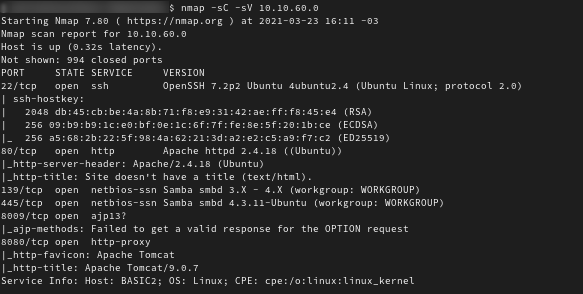In the image above you can see the first part of the results of the NMap scan I ran on the target machine. What we have here is basically information on the open ports and details on the services listening on these ports. So, what I described on (1) and (2) on the last paragraph. So, for open (TCP) ports we have port 22 (SSH), port 80 (HTTP), port 139 (NetBios+SMB), port 445 (SMB), port 8009 (AJP) and port 8080 (Tomcat). The first ports that call my attention right from the start are ports 22 and port 80. The first one because it shows me that I can get easy remote access to the machine (SSH is a remote access protocol which uses cryptography to protect transfered data) should I find any valid credentials. Finding valid credentials may or may not be an easy task, but if it is the former, at least I don't need to go through the trouble of trying to find another way to get remote access into the machine, I can just use what it is already providing me. That being said, port 80 calls my attention, because, unfortunately, websites on the World Wide Web are crawling with bugs and vulnerabilities that are very easy to exploit and obtain value from, and people who manage these unsafe websites never seem to care enough about security to keep an eye on, most of the time, their weakest assets (when it comes to cyber security, that is). The HTTP port is a good starting point because we will very likely have a website there, a website that may have some vulnerabilities that we can exploit. However, it is not because I immediately was drawn to these two ports that I forgot the open SMB ports just staring me in the face. Especially because, as I will show in just a little bit, our scripts grabbed a lot of interesting information on the services running in these ports, information I used to gain access later on. SMB is the protocol associated with the infamous WannaCry, so you can start to understand why an open SMB port, depending on the software version installed, is a problem. Should the server software not be patched, we could infect this machine with the ransomware. However, that is not our end goal, nor is that the only reason why the SMB ports are relevant here. SMB is the type of service that tends to be poorly configured, especially when we are talking about permissions and access rights. I won't talk about this right now because it is not yet the time, but store this information in the back of your mind for a little while because I intend to bring it back. Finally, just to say I don't notice them, ports 8009 and 8080 are also open. Tomcat can usually be a good entry point into a system considering we have some useful exploits out there for some versions of Tomcat. By searching for information on the Tomcat version we have (9.0.7) with the help of our friend Internet, we are able to easily find a list of the vulnerabilities associated with such versions, and we can even find some exploit codes provided by fellow (hopefully) ethical hackers who exploited such vulnerabilities for learning purposes on systems that allowed them to do so. I only considered trying a Tomcat exploit, however, should I not have found other ways to gain the remote access I was seeking. Therefore, for now, let's check out what other information NMap has provided us with, courtesy of the default scripts option we activated when executing the program.
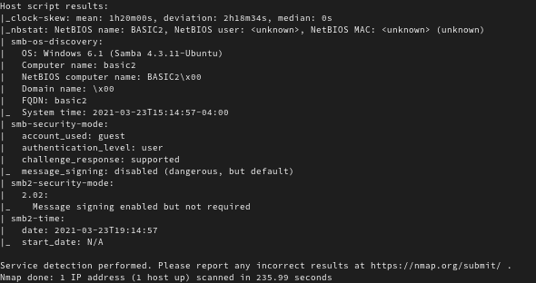NMap ran a few interesting scripts after finding out the SMB service was available in the target machine, such as smb-os-discovery and smb-security-mode. The first one gives us some basic information, such as the fact that the host name for the target is basic2, the OS that is running the SMB service is an Ubuntu Server (we can also gather that information from the other image, presenting the first part of the results. This is interesting, however, because we then know the software being used is Samba, and not a Microsoft implementation of the protocol), and the time for the target clock. This is all very interesting and should be taken note of. But the moment my eyes started to shine was when I saw the first result for the smb-security-mode script, the one that tells me that NMap tried to access the authenticated service with the guest account and was successful. This means that this Samba server is allowing the guest user to perform authentication and access the files the server is hosting. Should it not be clear for the reader, SMB is a protocol that allows for shared access of files stored in a single server. The server stores the files, which can then be simultaneously accessed by more than one user through the network, removing the need for many people to have to store in their own devices the same exact file, or, even more troublesome, update said file everytime someone makes a change to it. The SMB protocol supports authentication and authorization, where you can establish users allowed to access the share (another name for the shared folder containing the shared files) should they provide valid credentials, or set a password for a share, that can then only be accessed by users who know the share's password. The guest user will allow us to authenticate with the service with no password, should we have the regular configurations for these types of accounts. Considering NMap's acessement, that is probably the case. The 'default scripts' option for NMap does not dig too deep into searching for vulnerabilities, refraining from performing any type of elaborate brute force attack attempts, where it would test various different and possible passwords for an identified valid account. The basic scripts, as the name implies, test the basic and well-known. Since it is common to have no password set for the guest account, that is what NMap tries, most likely (I haven't explored the inner workings of this script in much detail to give this information with 100% certainty). Considering the results indicate a valid guest user login, the password verified for the guest user, is therefore, a default well-known password for this type of account, which is likely the no password at all. Should our IT technician not be too worried about the security of the system, or should he forget to properly configure the system in order to set what the guest user can and cannot access, the permissions for the guest user could be quite non restrictive, and we might be able to take a peek at some juicy files stored in said system. We could find nothing...but we could also find something valuable. That is why this step is called the 'recon' step, or enumeration step. We are gathering/enumerating all the information we possibly can so that we can try to access the server in many possible ways, should we come across a road block in one of our attempted methods.
So, our initial recon operation, a network/port scan on the target ends here. From this point forward, we are going to start analyzing the services that we identified as possibly being vulnerable, and enumerate these services specifically to try to find an entry point into the system. Don't get me wrong, we are still on the target analysis and enumeration phase. However, we are going a little bit deeper into our searching of said target by enumerating more specific parts of it. Our next section will cover that.
As mentioned in our previous section, we have two services running on the machine that shout out to us as being possible entry points: the HTTP service (provided by Apache version 2.4 as shown by NMap's results) or the SMB service. I decided to start checking out the HTTP service since web application exploitation is most of the time easy to perform. So, to begin my enumeration of the web service, I accessed the website directly by usage of the target machine's IP address as the URL (this does not always work, as there are some servers configured to only allow access to a website through the website's domain name, but this is not the case here). The image below contains the result.

Well. We have hit a road block. There are no links to click on, no forms to fill, therefore, no entry point. Right? Right? Wrong. The beauty of hacking most times lies beyond that which we can see. Just because it's not directly presented to you, it does not mean it's not accessible to you. I will try to show this with an example, once again, because I'm all about them. So, currently, for this blog, you access the home page, my posts, and the 'about me' page. The website provides you with links that all redirect you to those resources. These redirects (or the 'link clicking'), are but merely you sending the server that contains all of the website pages a new message requesting to access a specific page. And, lo and behold, website pages are a combination of files that when recovered by the browser, are rendered to present you something pretty to look at. Usually, unless you are a very messy developer, a website will be organized as a regular user's files are organized in a folder. So, for this website, I have, for example, a folder called img in which I store all images that will be used in a post. This folder/directory contains subfolders/subdirectories, one for each post. So, if you want to access an image for any post directly, you can simply type out the complete path for that image file on the server which is hosting the files, which is mossoctopus.github.io. You can directly type into your browser the following: https://mossoctopus.github.io/img/mossoctopus-pixil.png and you will see the Mossoctopus logo! Whaaaaaaat? But I don't link to this image on the website! I do, however, keep this image file on the web server, under the img directory and I have no security measures applied to prevent a user from directly accessing it from their browser. Of course, in this case, should I apply such a restriction, the website logo would not show up when loading any page, as the image must be requested by the browser to build the entire page. So let's expand on this example by simply trying to access the https://mossoctopus.github.io/img path. We get a 404 Not Found response from the server. The server hosting this website is associated to GitHub, so there is only so much I can do to permit or not access to the files inside of a directory in the server. Apparently, GitHub prohibits that, and returns a file not found message to the user. Should I be controlling the server, however, and should I not properly set permissions for this directory, maybe it could be accessible to users from the browser, and then they would see a hierarchy structure showing all the subdirectories and files contained in the root one being accessed, which in this case, due to the URL used, is the img directory. So, to finish this example off, I ask you to access a page: https://mossoctopus.github.io/secret/secret.txt. You will never be taken to this page by just regularly browsing the website. I don't link it anywhere. So, does that mean it does not exist? Definitely not, and with no security measures applied to the file preventing any user to access it, all they need to do, is know the path to the file.
With that new piece of information in hand, I now present to you the question: have we hit a dead end on our search for information on the target's website? Of course not. Just because it's hidden does not mean it is not there, all we have to do is look for it. Unfortunately, concerns regarding website security are still low, and many developers like to assume that users will behave exactly as they intend them to. Hackers do not do that, and we also won't. So, the next step was to try a brute force attack to find possible unlisted/indirectly accessible resources for this website. Just like password brute forcing, where you have a very huge list with possible passwords to try out on a credential form, this brute force attack will consider a list of well known file and directory names we can find in the various web servers that exist around the world. A database of that which we know exists and which can be commonly found in real systems. To not completely destroy my hands by going through the list manually whislt taking an eternity to do it, I also decided to use a program to help me achieve my end goal. Most people like to use dirbuster, and it is an ok program, but here comes my tip to you: there are so many softwares out there that do the same thing in different ways, exactly because no programmer thinks the same way. So, when trying out tools, actually try them out. Test various options. A tool that may be good for me may be awful to you and vice-versa. So, if you like dirbuster, go ahead. I, however, have been recently using another program that does the same thing as dirbuster called gobuster. Program in hand, all I needed was a wordlist of possible directory and file names for the program to test. If you are using Kali Linux, or any pentesting OS, these come with a few useful lists imbued to the file system by default. They also come with already pre-installed programs, such as dirbuster that have their own lists, which you can use. I am not using one of those distributions, having not only to install gobuster, but also having to find a list of possible names to reference during the brute force process. I follow a lot of the content provided by a security professional I only know by the name of IppSec (click this link to go to his website), and, on a few of the many videos he has posted to his YouTube channel, he was using a group of lists under a directory called SecLists. Upon further investigation, I came across this GitHub repository, which is pretty amazing. It has a bunch of lists that can be used to crack passwords, figure out usernames, among many other things, including fuzzing for directory and file names that can possibly be unlisted in a web server. So, a shout out to IppSec for taking me to this very useful collection of resources, and a shout out to Daniel Miessler, Jason Haddix and g0tmi1k, project maintainers. Finally, with a fuzzing software in hand, and a list to use as reference, all that was needed was to lauch the attack. So, the command I used to achieve this was the following:
mossoctopus@localhost$ gobuster dir -u 10.10.60.0 -r -w SecLists/Discovery/Web-Content/raft-medium-directories.txt
Before I show the results, let's just break down this command to understand what exactly it is doing. The first option following the command itself, dir, is informing gobuster that I am performing a directory/file brute force attack and not a subdomain brute force attack. I want to find X in http://website.com/X, instead of http://X.website.com, which would be a completely different situation. Option -u is used to present to the program the URL which will be followed by the directory or file name we are searching for. In this case, the URL is the 'starting point' of the website, the root directory, which can be accessed through typing 10.10.60.0 directly into a browser. We could, however, if we wanted to, tell it to start searching inside another directory in the website, for example 10.10.60.0/insert-directory-name-here. We would then be looking for stuff inside this subdirectory which is in turn inside of the main one. This, however, is not the case here. Option -r tells the server to follow redirects, but I will not go into detail regarding this option. Last but not least, option -w is followed by the local path to the wordlist with names that will be tested for directories and files (which is stored on the device running the program). Just to show you how these lists works, I will print a part of the contents of the one I used for this challenge, here. Below, you can see its first 20 lines.
cgi-bin
images
admin
includes
modules
templates
cache
media
js
language
tmp
search
wp-content
scripts
css
plugins
administrator
components
installation
wp-admin
Should you remind yourself of some of the URLs of websites you browse through, some of the directory names above may be familiar to you. The attack was launched using this list, and, sometimes, a single list won't be sufficient to get you results. Sometimes, there will be no results. But this is a basic pentesting challenge, so of course, there were results. The image below proves it.
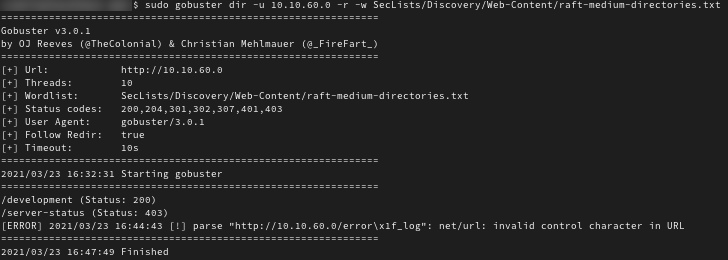This image shows us that we have 2 directories in this website that are not referenced by the main website page, but can be looked at should we include them in the URL. Of course, in one of the two cases, the server-status directory, we won't actually be able to see the contents for the directory, as gobuster was able to get a response from the server, meaning the directory does exist, but this response tells it that we are not allowed to access the resource (403 is code for forbidden access). The IT technician did their job correctly there! However, the development directory, if not meant to be public, did not have its permissions correctly configured for external access, as any user is able to recover the resource through an HTTP request. Code 200 is the code gobuster got for an answer when trying to access the resource, and 200 = OK in HTTP. In order to verify these results, I accessed the directories myself, as shown below.
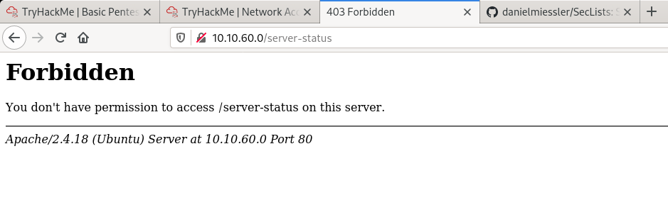 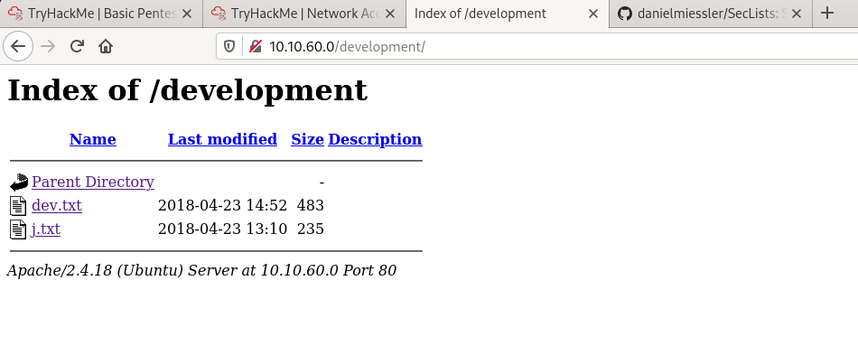So, no cookie for us when trying to pry more information from the target by accessing the server-status directory on the web server. However, for the development directory, we see a directory list, with all files and subdirectories under the current one. Cookie for us! Here, we have 2 text files, dev.txt and j.txt. The question now is, will they have any interesting data for us? The only way to find out, is by accessing them (oh, and by the way, just to complete my previous explanation on hidden directories: should the img directory for the website that is this blog be available for perusal, we would have seen something similar to what we see on the image above. A list of files and folders of the directory, with links to access their contents).
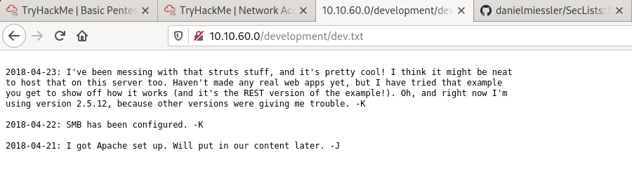 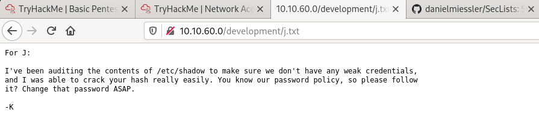Unfortunately for the security team, we have a lot of juicy information here. On the dev.txt file we have not only confirmation of an SMB server running on the machine, but also a little bit more information telling us that Apache Struts, version 2.5.12 is running on this server, with default configurations, most likely, as K here apparently has not configured it completely yet. I have NO idea what is Apache Struts. I do, however, know how to use a search engine, and when I search for exploits regarding this version of the program, I find a few. I also find out that Apache Struts is related and can be accessed through a Tomcat service. So that port 8080 we saw open when performing our network scan is seeming a lot more interesting. However, I will not be dishonest here and say I considered using this as an attack vector, because I definitely didn't. I didn't even pay that much attention to it, because what caught my eye was the content of the j.txt file. Mr. K is openly telling us that J's password hash can be easily cracked. What that means to me is that he has a password that can be found in a wordlist that is popular enough, considering K actually figured out what it was. We found out the machine has an open SSH port, which means we can test for usernames and passwords, especially considering that J will be a valid user for the machine. How can I be sure? Because K is going on about how he found out J's password after accessing the /etc/shadow file, which is a file that contains credentials for users in a Linux machine. So, most likely, J will be able to access the machine through SSH. However, I know that the username will not be simply 'J', so to try to log in, we need to try to at least get a hint of what could possibly be the username so that we can try to brute force it together with a password list, using a username list. We know it will probably start with the letter J but that's it. Should this be a real world scenario, maybe it would be easier to obtain this information through social media and the likes. But now, we work with what we have, which is, the SMB port.
So this process was pretty simple. I connected to the SMB server using the smbclient program that comes with the impacket toolkit. For those unfamiliar with this toolkit, it is a collection of Python programs that can be used to work with a lot of different network protocols, making life a little bit easier. SMB is one of these protocols, and the program I used here implements the client side of an SMB communication. For more information on impacket, access their GitHub page through this link. Moving on...I connected to the SMB server and it prompted me for a username and a password. As guessed and shown to us by NMap previously, the username was guest and the password was nothing. I think that it is worth mentioning here, that even if we hadn't run scripts or hadn't gotten this information, it is always worth it to check for access to services using default credentials, such as guest: - for SMB, or tomcat:tomcat for the Tomcat service. You would be surprised with the amount of times people suffer attacks because they simply forget to remove or change defaults.
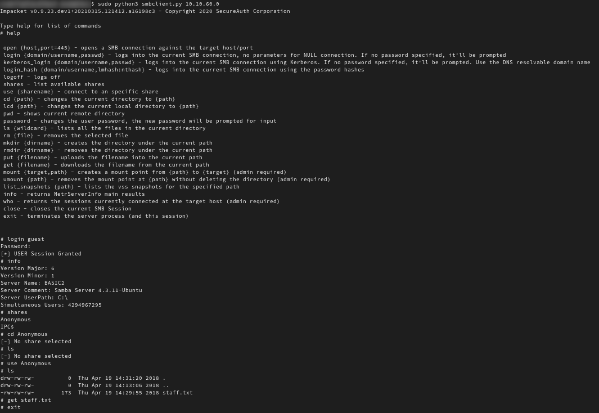The image above shows the entire process of logging in and recovering some files, performed via the use of a terminal. A connection was established with 10.10.60.0 via the use of the smbclient.py program, the command to request user login was executed and I was able to correctly authenticate with the guest user. Analyzing the shares that were acessible to the guest user, we only had 2 of them: Anonymous and IPC$. This second share is actually a share used by programs to exchange data that both need to execute. I was not very interested in this share because I also do not know a whole lot about it, and can't really say what I would be able to extract from it. Food for thought, and maybe a topic for me to perform more research on in the future. Because of this, I decided to access the Anonymous share, and, surprise, surprise (but not really), we find in this share a file with universal read and write permissions (meaning all users are allowed to read and modify the file) called staff.txt. By using a get command, I recovered the file, downloading it to my machine so that I could read it, and the contents were as follows:
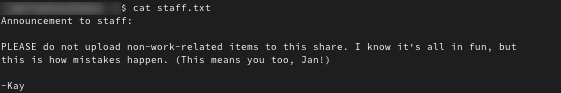Seems harmless enough to me. Except we finally get the very likely usernames for K and J. Kay...and Jan, in case you were going for that Men In Black reference. And I think this is a good enough place to mention the whole idea behind not making available information that does not need to be made available. Even if it seems harmless. The same stands for giving permissions to a user that does not need said permissions. Always do the minimum needed for someone to perform their job functions, or else, a malicious third party might find a way to exploit that extra little bit of leverage he gets from this lack of worry from your part. I mean, sure, we can obtain the names another way, and we can most likely connect to the machine another way. There is more than just one way to try to hack into a system. However...our lives have been made a lot easier now that we know: (1) J has a weak password (2) J's user is most likely jan and (3) Jan has a local user in the machine that is our target, and (4) we can use SSH to login with said user. So there it is folks...a taste of what is to come in the next step of this challenge.
The technique used here to try to get into the target machine was simple: try to brute force the password for user jan, testing various credential pairs with the help of a brute force software, in this case Hydra, and a password list, in this case, one from the SecLists, which is the collection of lists I previously mentioned. There is a single problem with the method chosen: it takes forever. Of course I am exaggerating by using the word 'forever', but that is to emphasize the fact that it takes a really long time. It took me nearly 3 hours to get this password, testing the SSH server against a simple 10 thousand password list. Usually those are in the house of millions, so, lucky for me that jan's password was common enough for it to be present in a smaller list. I don't have the best computer, I'll admit; however, that is not the only reason behind this lack of efficiency. Of course it contributes to the overall result, and so does the fact that Hydra, our brute force software of choice, decided to test the valid password almost last, as it was at the end of the list. Unlucky, yes, I know. Anyway, the main problem is none of those two. The actual main problem is the fact that SSH is a complex protocol. Before you start sending credentials to try to perform a remote login operation, you need to establish an SSH session and exchange session key information. After you establish said session, you still need to handle the situation where a few seconds go by once you insert a password (a possible configured pam_unix security measure, which is the module used in Linux system to check passwords. This security measure is used to discourage the realization of brute force attacks, as well as to prevent timing attacks, where the attacker can check if a credential is valid due to timing differences, as an unsuccessful login into a valid account can take a few seconds longer to process than a flat out unsuccessfull login. This helps figuring out a valid username, for instance, for later usage in a brute force password test), right or wrong, and you only have 3 tries to get it right before the server disconnects and you have to start all over again (this is not a reason to believe you are safe from SSH brute forcing simply because you may have a password that can be found at the end of a popular credential list, - I'm looking at you, rockyou.txt - as hackers are persistent and will wait hundreds of hours should they really want to invade your system. Your password can be considered 'safe' when it would take them more than a lifetime to log in. Unfortunately, hacking from the grave is still not something that is going to come to fruition any time soon. Therefore, please, set rules for strong passwords at your company! Use the lists as reference so that you don't have weak passwords. I mean, analysing the enemy weapon and using it in your favor when it's made available to you is not a crime, but, instead, a smart strategy!). All of that explains the eternal wait time we had when trying to brute force our way in through SSH. Considering we found a vulnerable Tomcat version on the machine, we could probably try to hack our way in through that. Even the credential brute force into the Tomcat manager page would take less time should we have chosen that route. However, that was not the method I chose to use here, so I will not go down that path. I do plan, though, to make another blog post on this alternative method, should it work (I haven't tested it out yet), because I think it's a pretty interesting way to show the many possible ways you can get access to a system. To be quite frank, I did not even consider the using the Tomcat vulnerability the first time I played through the challenge, not even giving it a second thought. The idea really developed while I was writing this blog post. I paused my writing to go check it out, and it seems like a promising way in, hence, the proposition of a second blog post involving this challenge. Should I be a real hacker in a real hacking scenario, maybe I should have been more careful and considered all possibilities, as the Tomcat exploit seems to me as a 'quieter' way into the system. This SSH brute forcing method is making our presence known in the target network, especially should the target system in said network be protected by a few security softwares, and even some security hardwares. It's like banging on the door with a bunch of different objects until one of the sounds wakes up the tenant. It is not discrete. So, enough rambling. I present to you, through the images below, the results of said brute force attack (though, not completely, because I'm not going to give you the answer, so you try the challenge for yourself. I know it might be a useless endeavor, because it's still pretty easy to find stuff like this on the Internet...I also gave you the answers for a lot of the steps before this one, but oh well...I hope that at least the credential brute forcing step you will try for yourself in case you are cheating by reading this blog post ahead of doing the challenge).
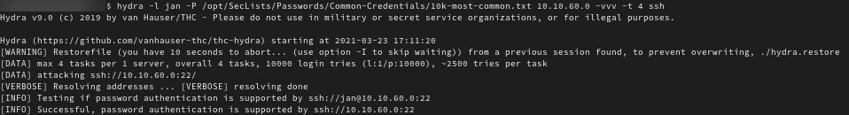 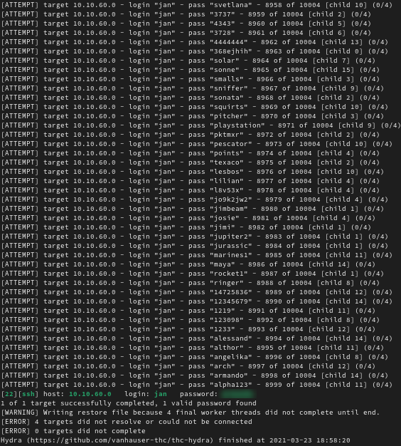So, first things first, let's follow suit of our other executed terminal commands and let's analyze the command that I used here. For those interested, and those that do not know the Hydra software, check out its GitHub repository through this link. But basically, as I have mentioned, Hydra is a brute force software, you can use with various protocols to try to brute force possible credentials (a username and password pair) that will authenticate your with a system, and authorize you to do something with or within the system. So, as you can see through the first image, after calling the program with hydra, I set the first option -l, which can be used to specify the username that will be tested on the brute force attacks. In this case, I am only testing for username jan, however, I could also be using a username list. This was king of a shortcut I took out of laziness. Yes, it was not one of my best moments, and, should this be an ethical hacking job or something more serious, I should have considered more possible usernames. His username could be Jan instead of jan. In Linux, character case matters and we are trying to hack into a Linux system. We could also have a situation where his username is not simply jan, eventhough his friends clearly call him that. It could be his firstname followed by his last name. Maybe his username doesn't even incorporate his real name. Who knows? However, there are two things to consider here. The first one is the fact that the Try Hack Me platform tries to show you a step-by-step on how to perform the challenge, and you have questions to answer at the website while you go through it. One of these questions for this specific challenge was: 'What is the username used to get into the box?' (something along those lines) and it shows you the that answer has 3 characters. Also, when I answered it with the possible username jan, it told me my answer was correct. So, the first thing to consider is: I took the easy way out. The second thing, however, you should consider, is that sometimes it is necessary to take a leap of faith and try out things that you are not 100% sure of. Some systems are not that easy to hack into and don't have a bunch of information lying around for you to farm, so you have to work with what you have and hope it yields some good results. Maybe it will, maybe it won't. In this case, it worked in our favor, and we had a little help from the providers of the challenge to top it all off. Plus, the chances that the username was going to be jan were pretty high here, leading me to make an educated guess. Jan appears to be in the development team according to all the data we collected, and Linux usernames tend to be all in lowecase letters. So there you go: work with probabilities and trust your gut a little bit. It's not alien to hear about some hacker getting into a system after one try because luckily the password to user admin was admin. Lucky? Yes, but also a smart try, as this is a well known default credential for many systems and is used by many softwares in their basic configurations. Do you know who also is lucky? You, because you get to see the results of the attack a mere 2 seconds later by checking out the second image, while I had to wait almost 3 hours for it. However, before we get into that, let's continue analyzing the Hydra command. First option, check. For the second option -P, we are telling Hydra to consider a password list during the brute force attempts, the list that is its argument showing up right after the typed option. Should we want to try a single password, we would use the lowercase version of the letter P instead of the uppercase. Right after specifying the password list file we have an IP address, which is the address for the target of our attack. Option -t specifies how many concurrent threads I want running throughout the attack. I set it as 4, but later on had to change this to 16, as 4 threads were taking too long to get the job done. It would have taken a lot more than 3 hours to finish this whole ordeal should I have left the number of threads set to 4. Finally, we tell Hydra with the ssh at the end of the command that the brute forcing will be performed on an SSH service. That way, Hydra can attempt to find the correct credentials by communicating appropriately with the target, as it knows which protocol language the target will be speaking, and on which port it will be doing so. The second image shows that I finally was able to get jan's login credentials after a very long time. Cheers to that! So what do you do after getting the credentials to log into the system? You log into the system.
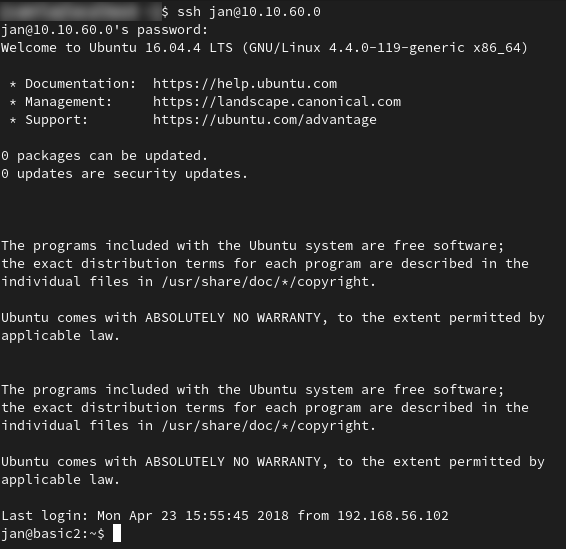Aaaaand, voilá. Onto the next step of our journey to root.
We got access into the system, and now, we need to know what we are able to do in said system, and what exactly are the goods we have access to. Unfortunately for us, logging in as Jan does not allow us to do much. I tried running a sudo -l command to check out what jan was able to execute on the machine with higher privileges. For those unaware, the sudo command allows users to execute certain commands with the privileges of another user or group set on the OS. Usually this other user is the root user, the all mighty system administrator. Running the sudo -l command allows you to see what privileges the current user possesses according to what was configured for that user. Jan's user has absolutely no sudo privileges. Therefore, getting to root which is our end goal, will not be so straightforward. That's why we need to once again enumerate, or, should you prefer to call it something else, do some internal recon. To know how we can get from jan to root we need to know what the system has to offer. Since we have only jan to work with for now, we will try to obtain all possible information with this user to maybe find a failure point in the system which we can exploit to escalate our privileges to root, or at least to a user that will get us closer to root. Why is our only goal to get to root, one might ask? Why is there not a more specific goal, like stealing some kind of data? When we think about the real world, maybe we could have a situation where achieving remote access with user jan is enough. Maybe you only want to steal Jan's files for some reason. But usually in hacking challenges we have that the end goal is to get access to the system as the root user because root is king. It's the same as stealing the crown and claiming the throne. You may have no orders to throw around to your staff or subjects, but the power to do so is in your hands. You can do whatever you want to the system from this point forward. Game over for the enemy.
So, what should we look into to find a way to exploit this system and become a super user? There are many articles out there that give you the basics for Linux enumeration, as there are many softwares that do this enumeration for you, as is the case of LinPEAS. I wanted to upload the LinPEAS script into the machine and execute it to be able to find possible ways to get root, but Jan's privileges were so awful on it that I wasn't even able to do that. So I had to explore manually. Therefore, I will give you here a short summary of the first things I look for when enumerating Linux systems. The first one being: I check out basic system information such as running programs (via the ps -aux command, for example) and users registered on the machine. This second information can be easily obtained by checking the contents of the /etc/passwd file, which is always present in Linux systems, making it a very good place to certainly be able to grab information on the system. For this machine, this file gave me some interesting information to work with (as it usually does), as shown by the image below.
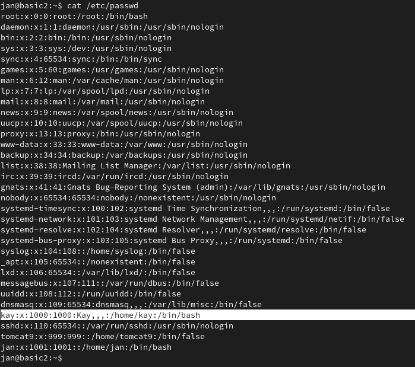Highlighted on the image, we are able to see that this machine, among other users, has a user named kay. Maybe kay has more privileges than jan, and getting to root through this newly discovered user will be easier than achieving the same goal with user jan. Considering the more social side of things, Kay was the one writing the messages for Jan, and apparently the one responsible for configuring the SMB server and the Tomcat server. This leads me to believe that Kay's user has more power to do things in the system out of necessity. Installing software on a system is a task that usually requires a user to have higher privileges, or, in other words, requires a user that is configured to have more permissions which allow him/her to read from, write to and execute more files in the file system. That's why you always have to call support whenever you want to install the new awesome Solitaire game on your Windows 10 work computer. Your user has no administrative privileges (most likely). Their's has. Especially because you shouldn't be installing games on your computer, you should be working! Shame on you. Anyway, after obtaining this basic information, I know where I want to focus my energy now: I want to look at Kay's stuff. In we go to the explanation of the second thing I do when enumerating Linux systems: I check out the files lying around in the machine. People leave files containing juicy information all over their computers, so, in many instances, we are bound to find something interesting by checking those out, or, at least, by checking out the ones we have the permission to. My starting point was kay's home directory, but we needed not to be necessarily limited by that, and neither should you. You can explore all files in the computer when trying to enumerate. Many are the times we come across configuration files for databases or server softwares, and we can snag an administrative password that is also used for a user account in the system, since people insist on using the same password for everything. Unfortunately, usability and convenience are security's biggest enemies. However, since this is a basic pentesting machine, we didn't need to dig too deep to find some good stuff. Kay's home directory was enough.
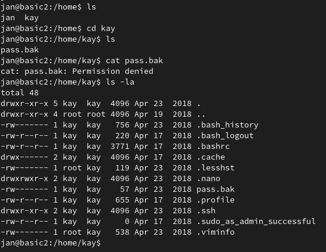As shown by the image above, as soon as we get in kay's home directory we come across the pass.bak file, which, as the name states, is a password backup file. My first reaction is, of course, to try to read it. Unfortunately for us, Kay set the permissions for the file correctly (if his intentions were that no user but his should be able to mess with the file), and user jan is not allowed to read the file. The command ls -la I used following the cat command that attempted to read the contents of the file shows us that more clearly. The permissions for the pass.bak file are set to rw-------, meaning that only the owner of the file can read and write to the file. Just to give a quick explanation on this representation of permissions for files: the first three characters represent the owner of the file, the second three characters represent the group of users associated to the file, and the last three represent all other users. Out of the three characters representing each entity, the first one always represents the 'read' permission, the second one the 'write' permission, and the third one the 'execute' permission. The hifen stands for the permission not being set, while letters r, w, and x, represent the reading, writing and executing permissions, respectively being set for the specific entity. So, take the permissions for pass.bak. The first three characters, which represent the file owner permissions, are r, w and hifen. The letters indicate permissions set for reading and writing to the file, and the hifen establishes that this file cannot be executed, not even by its owner. For the second triple, we have all hiphens, meaning that the user group associated to the file has no permissions whatsoever, and cannot read the file, write to it or execute it. The same stands for all other users. Should all users in all groups be set to have full permissions over the file, we would use the following set of characters: rwxrwxrwx. The set of characters that interests us, however, is simply rw----r--, which says all other users in the system that are not the file owner or in the file group can read the file. We want this set of permissions specifically, because we do not belong to the file group, so the read permission to the file group would still not allow us to read it. How do we know what is the file owner and the file group? On the third and fourth columns for each line we get that information. For file pass.bak the owner is user kay and the file group are all users belonging to group kay. Our current user does not belong to that group, and that can be verified by a simple groups jan command. So, unfortunately for us, we will not be able to so easily get kay's password by reading this file, that should not be present on this system, no matter the permissions set to it (files with clear text passwords written all over them are a huge security no-no). However, after executing the ls -la command, I was able to see something else that interested me, which was the .ssh directory. This directory would not be usually presented to the user after the simple execution of an ls command, as it is a hidden directory (hidden directories in Linux start with a '.'). However, even though it is hidden, it is a very important directory, in the system, as it usually contains information on public keys that can be used for authenticating a user that wants to access a system through SSH using a key and not a password. This is a more reliable way to verify the identity of the user accessing the system. So, let's dive into that for a few lines of text, shall we?
Assymetric cryptography algorithms can be used for more than just encoding some piece of data so that it can be sent confidentially through the Internet to it's final destination. Because of the mathematical properties involved, they can also be used to verify someone's identity. So how does it all work? When we are talking about assymetric cryptography algorithms, we are talking about two keys: a public key and a private key. As I already mentioned in a previous paragraph implicity (the one where I explain how VPNs work), the public key is made available to anyone that wants to send a message to the key pair owner. This key can be used to encrypt a message, but never to decrypt it, the latter only being achieved by the corresponding private key, which will be in possession of the owner, and cannot be shared. If you assume the private key which pairs with the public key you used to encrypt you message is only in possession of the one allowed to read the message, you can assume that you are confidentially trading information with this entity. Only they have the decryption key, meaning only they will be able to obtain the real data from the encoded version you generated with the public key. However, should a hacker (or anyone for that matter) come across this private key, you have a problem, because then they are able to also read the secret messages you are encrypting with the public key, having found the means to decrypt them. That is why storing a private key safely is of the utmost importance. You loose all confidentiality once a private key becomes public. However, there is also another property that can be extracted from this relationship. Data encrypted with the private key can only be decrypted by the corresponding public key. Of course, it makes no sense to use this for confidentiality purposes because the public key is made available to all in the Internet. If you use your private key to encrypt data, all will be able to read it by decrypting it with the public key. However, notice that, since you are supposedly the only one that possesses the private key which will result in decryption by the corresponding public key, only you can write encrypted messages to be decrypted by your public key. Any other private keys will generate cipher code that your public key will not be able to decrypt. This means, you can use a cipher text, encrypted by your private key, to prove to everyone that has your public key, your own identity. If the message is successfully decrypted by your public key, it needs to be your private key that generated it, meaning you must be the one that generated it, because you are the only one with access to said private key (right? You didn't leave it in a file that can be read by all users with access to your machine...did you?). This property can be used to allow a user to authenticate with a service, say SSH, and gain remote access without ever needing to transfer their account password through the network. SSH does not use public and private keys to prove identity exactly in this fashion, but the explanation might be helpful to understand how it actually implements this. The .ssh directory contains the information needed to perform the authentication operation via the use of public and private keys by the server software, and that's why it is our starting point. By using a program such as the ssh-keygen program, you are able to generate a key pair. The private key is supposed to be kept away from prying eyes, only accessible to you (possibly saved with the appropriate permissions on the machine where you are going to remote access from to the one being considered here) , while the public key is written into a file called authorized-keys inside the directory .ssh, in the machine you wish to remote access to, in the home directory of the user you wish to remote access as. Whenever someone tries to log in as said specific user, SSH checks the authorized-keys file on that user's home directory. Using the authorized public keys on the file, SSH is able to verify if the private key being used by the connecting device is a valid pair, meaning it belongs to an authorized user. This is done via a challenge, where the SSH server encrypts a message using a public key recovered from the file. If the connecting client is able to respond with the unencrypted version of the message, it is proven that they have the private key that should only belong to a user who was allowed to remote access into the machine ('allowed' because their public key was in the file that give them this status). As I said, it doesn't use the public and private key for authentication in the exact same way that I mentioned before, but, it basically utilizes the same concepts and similar mechanics to achieve the same goal. It's the same horse viewed from different perspectives. So, this method of authentication is considered 'safer' because the connecting user is 'proving' that he is who he says he is. I logged in as user jan because I used his password, but that is not really a proof that I actually am Jan. I could have just stolen his password. Oh...wait, I did. With the private-public key pair, chances are, the person connecting is actually who they say they are, because private keys are known only to the said person, and only they are able to complete the challenge and connect. There are a few problems, however, that should be considered, and I will mention them right after the next image.
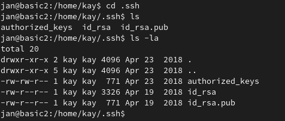So, as you can see by the image, permissions are not correctly set for the .ssh directory in kay's home directory. Kay goes through all the trouble of being careful when it comes to the password file, but forgets all about security when it comes to this directory. The first thing that came to mind was to generate my own key pair and write my public key to the authorized-keys file. This means that I would be able to log in as kay through without ever needing to know his password in the basic2 machine because the system would blindly believe that I was kay when I correctly solved the SSH challenge the moment of logging in with a key I generated myself. Good thing that we are user jan and this file can only be written to by kay, as permission string rw-rw-r-- tells us. So, for that, I congratulate Kay. He did it right. What he did not do right was leave his private key hanging around this directory, with permissions that allow it to be read by any user. File id-rsa is a private key file, and I was able to confirm it by checking out the file contents (as shown by the image below).
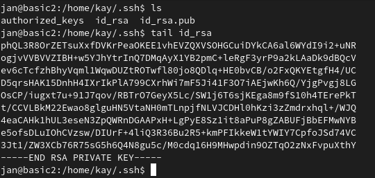That, together with the fact that id_rsa.pub contained the same public key that was inside the authorized-keys file was enough for me to say 'Oh...poor Kay', because we had just found our way in. All we need is to extract the private key file, which is as easy as copying the output of a cat command applied to the file and pasting the result to a new file in our local machine (the 'hacker machine'). With Kay's private key in hands, we are able to fool SSH into thinking we are actually Kay and log in, no user password needed. That was Kay's big mistake: he didn't really keep this private key private. So, the problems I mentioned previously are these: the situation when you don't properly set permissions to the authorized-keys file, meaning anyone can include their public key to the file and log in as if they were actually authorized; and leaving private keys hanging around to be read by anyone. The whole point of using this kind of authentication method for more safety is invalidated by your lack of care. So, is it safer to use this method? In theory, yes. In practice, it depends on how you deal with the resources that involve this type of authentication method. This should be the equivalent of biometric authentication, as a private key should be unique and untransferible as is a fingerprint. However, remember that biometric authentication also fails if someone is able to steal your fingerprints (always expertly performed by movie super spies). Get my gist?
Enumeration complete. We have something that can allow us to move on to the next step. Previously, I talked about 3 things I did when initially enumerating a Linux machine. I only mentioned two of them here, but worry not, I will talk about the third one later on, as a preview of what might come in future posts, another possible way to achieve root status on the challenge machine. So, hold your horses, more on enumeration is to come. For now, we proceed to our next step, which is a privilege escalation into user kay.
After all I talked about, this seemed like it would be a pretty simple thing to achieve. Right? All we need to do is use the private key we recovered from kay's files to log in to the basic2 machine through SSH. Following this step, we need just to enumerate once again to try to get to root. Unfortunately, my dreams of simplicity were promptly crushed when I came across this:
I need a passphrase to log in as user Kay. I then started to question myself why did I need a passphrase when the purpose of using the private and public keys was exactly to eliminate the need to use passwords to log in. When I used this method for remote access I usually set no passphrase, which is also an awful idea considering that if my private key were stolen, the thief would be able to log in with no hassle. And I was expecting that to happen here, actually. But alas, one more obstacle to face. First step: figure out what is the passphrase's purpose. After some research, I was able to figure it out: the passphrase, set during the creation of the keys by ssh-keygen (and I believe by any other key generation programs) is used to encrypt the private key, in order give it one more layer of protection. So, I do need a password to log in, but it is not kay's password in the basic2 machine. It's the password Kay set to symmetrically encrypt his private key. Without this password, which is also the decryption key (symmetric encryption algorithm and all) the unencrypted version of the key cannot be obtained, and, therefore the SSH challenge cannot be completed, allowing me to log in as user kay. So, what I was wondering was...what now? My answer came quickly, as once again the Internet provided me with an interesting answer after a quick search. Brute force the password. One of the ways to perform this brute force attack is by using the John the Ripper password cracking tool. Since John the Ripper works with password hashes and not private key files, you first need to obtain the password hash from the file to be able to use the tool. I do not know too much about this process, however, from what I could gather, the passphrase hash is stored into the private key file together with the private key, probably for easy verification purposes. A password hash, for those that might need a reminder, is a transformed version of a password used to store a password without having to actually store a password. A hashing algorithm takes a certain data as input (this input can have any size), and, after processing, outputs another piece of data that has a fixed size. As an example, think of the algorithm that sums the values that are the alphabet positions for the letters that make up a certain word. Therefore, the hash for abc is 1 + 2 + 3 = 6. So, from a variable sized string data that we could receive as an input (any word or combination of letters is considered a valid input), I obtain a fixed sized output of 1 single integer (it's one integer despite the fact that the integer may be made up of one than more figure). For this simple algorithm, it is possible to go back to abc from the value 6, even though I would have more than one possible origin string that could have generated this single output value. However, when we are talking about cryptographic hashes and the elaborate algorithms used to hash passwords, we are talking about calculations over an input that result on an output hash that:
There are other properties that apply to cryptographic hashes, but here I mention the ones that are important for understanding that: when you store a password hash, you are essentialy storing a password without having to actually need to store the password. Why? You store information that represents that password but gives no indication of what the password really is. You can use that information to verify if an input value provided by a user is a correct password by applying the hash function over that user data and comparing the resulting hash to the one you have stored. Since unique input values generate unique hash outputs, the values will match only if the user inputs the correct password. Trying to forge a fake password input value that would result in the same hash is nearly impossible, and obtaining the password from the hash value only also is, which is why such value can be stored wherever without any kind of protection to keep it confidential (as it is on the SSH private key file. Any one can read the passphrase hash, and this hash will be used to verify the passphrase provided, which, if established as valid after comparison to the hash, will be used to decrypt the data that is the private key. However, knowledge of the hash does not imply knowledge on what the passphrase is, and the hash by itself cannot be used to decrypt the encrypted data). That's why it is a good way to store information that has a higher need for secrecy, even though it does not mean it makes passwords undiscoverable as a consequence of them not being directly written to a file or database. How so? All of this was explained so that I could reach the following point: John the Ripper and other hash cracking tools such as Hashcat are able to brute force passwords, and obtain a password given a certain hash value. They are tools that, considering a password list, apply the hashing algorithm to the various passwords on the list, one by one, and compare the outputs to the password hash you wish to crack. When they match, since cryptographic hashing algorithms will always generate the same result for the same input and no different inputs will generate the same results, it means you have found the input string, a.k.a. the password, that resulted in the generation of the hash you have. This means that storing a hash can be just as bad as storing a clear text password when your password is bad. We are hoping here, in our challenge, that Kay has made this exact mistake and we can easily figure out his password by cracking the hash, after using a 'common-passwords' list as a reference. So, what John the Ripper would do for us here would be extract the password hash from the private key file, and then, use the hash and a password list to try to find out what is the passphrase being used to encrypt the key. Unfortunately, after much trying to perform all of these operations to grab the passphrase from the private key file by using programs such as ssh2john (for extraction of the password hash from the private key file), john (password cracking tool), hashcat (password cracking tool), and a few others, I gave up after not being able to convert the hash in the private key file into a format that was understood by some of the password crackers, and after verifying that the other tools that understood the format of the hash I was able to extract were unable to crack it because of my very bad graphics card. I needed to find another solution to perform this brute force attack, and, thankfully, I did. So, if you want to learn more about the John the Ripper method, I encourage you to check other tutorials or walkthroughs for this challenge. I wasn't able to do it this way, so I won't be going into more detail here. I'll show you the way I did it.
I continued on my quest to try to get the passphrase for Kay's SSH private key and I came across this code. It's simple, but I found it extremely efficient considering my goal. Basically what the code (a bash script) does is it uses the ssh-keygen program itself to try to decrypt the private key given a passphrase as input, through the requested execution of another operation. If ssh-keygen responds negatively to the requested operation, it means that it was unable to decrypt the private key file. If it outputs the result, it means the file was decrypted using a specific password you provided to the program. So, the command used for testing this is the following:
mossoctopus@localhost$ ssh-keygen -y -f [private-key-file] -P [passphrase]
The -y option in ssh-keygen tells the program to try to derive a public key file from a private key one. As arguments it takes the private key file (follows the -f option) and the passphrase this private key file might be associated to (follows the -P option). Assymetric encryption algorithms rely on the fact that the private key cannot be easily obtained from the public key, meaning that you cannot guess the private key even if you have the public key, keeping the private key truly private should the key owner keep their key protected. However, it is possible to obtain the public key from the private key. This command does exactly that. However, to get the public key, the private key needs first to be decrypted. So this is essentialy the same as testing the password with the SSH server without actually having to do so. The ssh-keygen program tries to perform the decryption operation to get the public key given the private key file as input, but when the wrong passphrase is given, it is unable to proceed with the operation and exits with an error message. When the passphrase is correct, however, no error occurs and we can tell by the different outcome of the command execution that the given input was able to decrypt the private key file, and is therefore our sought after key which is encrypting the file we need for SSH login. So, there we have it. Problem solved by searching for a new solution. Sometimes regular tools won't work or will need a little bit of tweaking before they can deliver the desired results. That is something that I learned in my journey through participating in pentesting challenges, and what I see as separating the script kiddies from the pros. I am by no means calling myself a pro, because I am still far away from that. However, my point by saying this is that, a script kiddie, being a hacker that doesn't try to understand the technology behind what he does, copying and pasting code, using tools that give him immediate results without actually knowing what the tools do, gets to be a hacker, but will never be as dangerous as one that actually understands the science behind his actions giving him/her the resourcefullness that just using automatic tools might not. Aim to be resourceful and think for yourself and don't be the script kiddie that only knows how to follow the script and can't improvise. Nevertheless, script kiddies can still be scary without being the worst threats out there. They are not the worst threats because they don't understand technology all that well, and more elaborate and well protected/configured systems might make their hacking attempts end in failure, but at the same time, the amount of tools that make the process automatic give people with little computing knowledge the power to perform some very damaging attacks should you let your staff use passwords such as 12345. Let's not get too philosophical, however, and continue our analysis of the challenge. I used the tool I mentioned earlier using another list of the collection of lists I already talked about here earlier in the post, aaaaand, I got a positive result, meaning, password cracked.
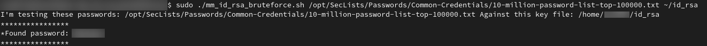With the SSH passphrase at out disposal, it is finally possible to use kay's private key to log into the server with this same user. So that was what I did, and, voilá, we were able to escalate to kay's privilege level, and now, we can do a little bit more in the basic2 machine to try to get root.
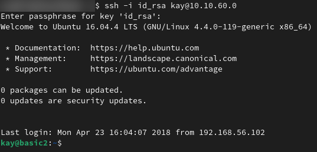So we finally have access to the machine with a user that can do more than almost nothing, which was the case for user jan. Now what? The name of the step says it all, as the process to get to root, in its core, is the same we had to get from jan to kay. We enumerate, gather information, and with that information try to find a vulnerability that can be exploited in order for us to change from the kay privilege level to the root privilege level. One might ask what is the purpose of enumerating again since we already obtained system information while we were logged in as user jan. The answer lies in the fact that kay will able to perform operations and read files that user jan might not have been allowed to, as it is the case with the file pass.bak in the /home/kay directory. That file belonged to and could only be read by user kay, and surprise, surprise...we are now that user. So, I started my enumeration with the obvious move: read this file that supposedly contained a password, which it did. It contained Kay's password for his Linux user in the machine we are now logged into.
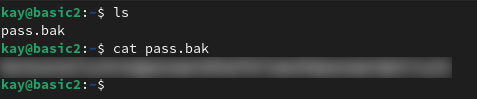And there it is (reference the above image). User kay's very strong, 20+ character password, which has its strenght completely invalidated by the fact that Kay decided to save this password into a file that we, as the 'hackers' in this situation, were able to get to. Now that we have kay's password we can execute a few sudo commands, including sudo -l, which will tell us what commands this user is able to execute with root level privilege. That was, therefore, the next operation performed, as shown by the following image.
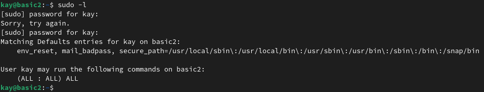As a result of executing the sudo -l command, we are able to verify that user kay is allowed to execute all commands with super user privileges. The last two lines of the command result are the ones that indicate this. The line containing the (ALL:ALL) ALL information seems redundant, but it is actually detailing the privilege level that user kay has when using sudo, as per the sudo command syntax. The first ALL indicates that user kay can run commands as all users (replicating the privileges of any user). The second ALL indicates that kay can also run commands as all groups. Finally, the third ALL indicates what commands can be run as the users and groups kay is allowed to 'impersonate' (this is not a technical term, I'm just using it to make the idea clear here) when in sudo mode, and, as the word itself indicates this too us, it is all commands. For this reason, privilege escalation on this machine from regular user kay to root user is pretty simple: we can simply run the bash program with sudo, meaning we will execute a new shell program, but as the root user (when no specific user is set as an option for the sudo command, it automatically tries to run it as the root user. That is why we do not need to specify any options together with the command, as it can be seen in the image below). And so it was done.
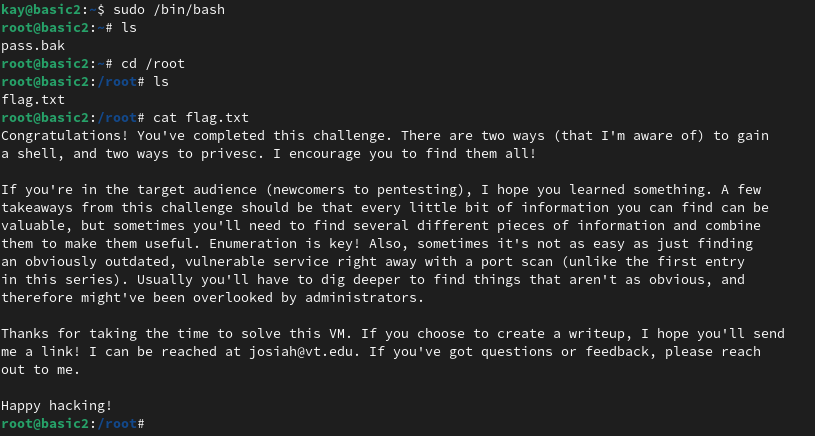Challenge complete! And we even get a nice congratulations message from the challenge creator. However, I do not plan to end this blog post here. One thing that I must do before wrapping up this enourmos post is once again bring to your attention the fact that this method of privilege escalation could have been avoided, if privileges and permissions for user kay were set to the minimum necessary for this user to perform the activities he needs to perform. Having a user that is not root have the exact same privileges as root is the same as just having another root user, maybe even worse, because people tend to be less careful when it comes to non-administrative accounts, leaving password files lying around, and using passwords that aren't that strong because strong passwords only matter when it comes to the root user. So, what I am saying here is: take the time to correctly configure sudo, and don't allow a user to have more privileges than the bare minimum that he/she needs to complete their tasks. If you do, you are just expanding on the possible ways an attacker might have to try to escalate privileges until he gets to root. That being said, another thing I must do before I end this post is tell you what is the third thing I do when I start enumerating Linux machines! I waited until this point because this information can be used when attempting to escalate privileges on the challenge machine in an alternative way to the one I presented here. This alternative method that can be used, is in fact a viable option when we don't have the bad sudo configurations we came across here. However, I am sorry to inform that I might have misled you, and do not intend to present this information in this post specifically. As I have previously mentioned I plan to make a post to explore other ways in which it would be possible to hack this machine, gain access and get our coveted root privileges, a part 2, if I dare say. So, unfortunately, I will have to keep you waiting for this enumeration information until the new post comes out, because I also intend to test the privilege escalation method that derives from it in this parallel universe challenge solution. Sorry :/ . For now...all I can give you is a promise, and...
Finally this post reaches its end. I won't even take too long trying to give an in depth conclusion because I wrote so much stuff for this post, I can't stand looking at it anymore. All I can say is, I hope this was informative to you, and I hope you were able to learn something new here! I certainly did doing the research to write this and bring forward useful (and hopefully correct) information. So, for now, I bid you farewell, and hope I can see you on the next post where I will explore the other possible methods that allow us to thoroughly hack this machine. Tomcat, I have not forgotten your existence, and I am coming for you! For the time being though, I am going to grab myself some food because even if you're not hungry, 900+ lines of text later, I definitely am. Bye.